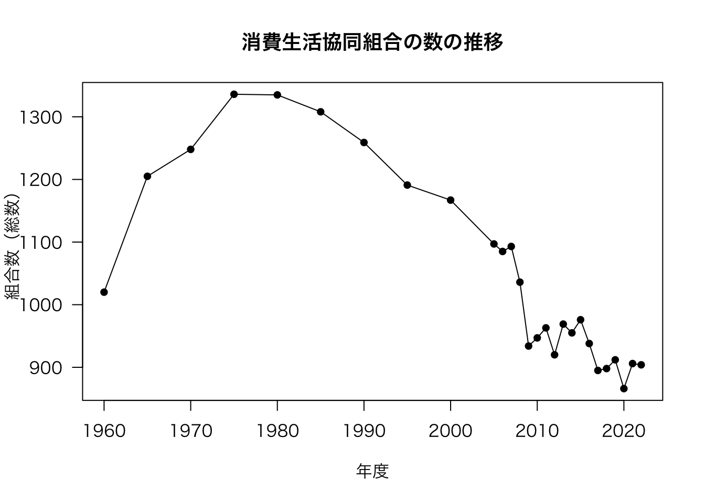
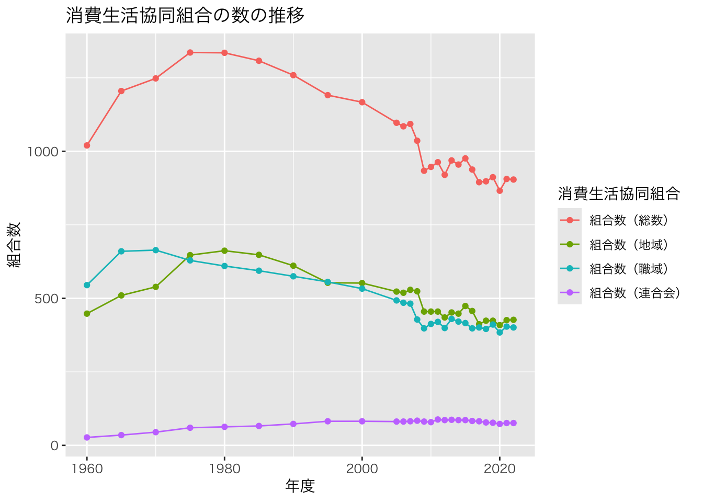

getwd()統計データを用いた作図：e-Stat編
ここでは，消費生活協同組合の組合数と組合員数の推移の折れ線グラフを作成する。 日本の統計データの多くは，政府統計の総合窓口から取得可能である。 このサイトのことをe-Statと呼ぶ。 e-Statがどのようなサイトかは，『e-Stat』とは？などを読むとよい。
消費生活協同組合に関する統計データはe-Statから取得できる。 消費生活協同組合の組合数と組合員数の推移がわかる最新のデータは，次のページから取得できる。 実際に検索してみて，このページにたどり着けるか試してみよう。
消費生活協同組合（連合会）実態調査 2-1 組合数及び組合員数の状況
さて，ここからどのようにして折れ線グラフを描こうか。 上述のサイトからExcel形式でファイルをダウンロードできるので，ダウンロードしてみる。 2-1.xlsxというファイル名で，ファイルがダウンロードされたはずである。 あとは，Microsoft Officeを構成するアプリケーションのひとつであるExcelを起動して，ファイルを開き，Excelの機能を使って折れ線グラフを作成することができる。 Excelの図で満足できる人はこれで終わりである。 ちまちまとマウスをクリックしながら，はたまた数値を別のセルに移動させながら，折れ線グラフを作成するとよい。 以下の説明は，Excelでは満足できない人のためのものである。
これ以降は，The Comprehensive R Archive Networkから自分のパソコンのOSに合ったファイルをダウンロードして，自分のパソコンにインストールしておかなければならない。
1 ExcelファイルをRで扱う
1.1 作業ディレクトリの変更
まず，Rを起動し，現在，パソコンのどこにいるのかを確認する。 「どこ」というのは，自分のパソコンのディレクトリ（フォルダとも呼ぶ）構成の「どこ」にいるのかという意味であり，Windowsなら”C:“から始まり，macOSなら”/“から始まる階層構造における位置のことである。 何も設定をしていなければ，Rの起動直後は，ホームディレクトリにいるはずである。 次のコマンドで，自分がどこにいるか（カレントディレクトリの場所）を確認できる。
作業ディレクトリ（working directory）だからwdであり，それを得るという意味でgetを付けている。 通常，コマンドの意味は知る必要ないが，覚えるためには意味とコマンドの綴りを対応させなければならず，必然的に覚えざるを得ない。 作業ディレクトリを設定するには次のようにする。
setwd("~")“~”はホームディレクトリを意味する。 “~”を自分が作業したいところにすればよい。 よくわからないと思うので，最初は先ほどダウンロードしたExcelファイルをホームディレクトリに移動して，そこで作業するのも悪くない。 Excelファイルの移動は，Windowsならエクスプローラーを使い，macOSならファインダーを使えばよい。 この場合，作業ディレクトリは変更する必要がない。
1.2 Excelファイルの読み込み
実は，いきなりハードルが高い。 Excelファイルを読み込むのがハードルが高いのではなく，e-StatにあるExcelファイルのフォーマットが原因で，データを扱えるようにするまでが一苦労である。 本当なら試行錯誤が必要であるが，以下のとおり実行すれば問題なく読み込める。
readxlを初めて使う場合のみ，以下のコマンドを実行する。 一度実行すれば，パソコンの電源を切ったとしても，再度実行する必要はない（実行してもエラーにはならないので，不安なら実行すればよい）。
install.packages("readxl")丁寧な説明はここまでとする。
Rに慣れていない人は，まずはコンマ区切り（CSV）またはタブ区切り（TSV）テキストファイルを読み込む練習から始めるべきである。 これらのファイルは，拡張子が.csvや.tsvとなっている。 また，Excelのようにセル結合等，見栄えを意識したデータではないため，初心者には非常にわかりやすい。 CSVファイルが読み込めるようになってから，以下を読み進めてほしい。
以下のコマンドでExcelファイルを読み込むことができる。
library(readxl)
df <- readxl::read_excel("2-1.xlsx", col_names = FALSE, skip = 2)次に，読み込んだデータの前処理をする。 ここで何をやるかは，そのファイルがどうなっているかに依存する。 この作業を地道にやることにより，データ分析を見越して綺麗なファイルを作成しなければならないことに気づくはずである。 それぞれの立場でそれぞれの事情があるのだろうと思いを馳せるだけである。 地味で辛い作業である。
# 下にある注を削除
df <- df[-c(30:nrow(df)), ]
# ヘッダーを整理
tmp <- gsub(" ", "", df[1, ])
tmp[3:5] <- tmp[2]
tmp[7:8] <- tmp[6]
tmp[10:11] <- tmp[9]
names(df) <- paste(tmp, gsub(" ", "", df[2, ]), sep = "_")
names(df) <- sub("_NA", "", names(df))
df <- df[-c(1:3), ]
# 昭和32年という非表示の行を見つけて唖然とする
df[1, ]# A tibble: 1 × 11
年度 組合数_総数 組合数_地域 組合数_職域 組合数_連合会 組合員数_総数
<chr> <chr> <chr> <chr> <chr> <chr>
1 昭和32 1013 526 464 23 2896557
# ℹ 5 more variables: 組合員数_地域 <chr>, 組合員数_職域 <chr>,
# `1組合当たり_総数` <chr>, `1組合当たり_地域` <chr>,
# `1組合当たり_職域` <chr># 年度を西暦に強引に変換する
df <- df[-1, ]
df[, "年度"] <- c(seq(35 + 1925, 2005, 5), seq(2006, 2020, 1))
# 列を数値型に変換する
df[, 2:ncol(df)] <- lapply(df[, 2:ncol(df)], as.double)
# 以下は好みであり，実行しなくてもよい
dfcoop <- data.frame(df)Excelファイルから読み込んだデータが分析可能な状態になっているかどうかを確認するためには，以下のコマンドを実行する。
head(dfcoop) 年度 組合数_総数 組合数_地域 組合数_職域 組合数_連合会 組合員数_総数
1 1960 1020 448 545 27 3924007
2 1965 1205 510 660 35 7458091
3 1970 1248 539 664 45 12660831
4 1975 1336 647 629 60 17956966
5 1980 1335 662 610 63 23170446
6 1985 1308 648 594 66 29802226
組合員数_地域 組合員数_職域 X1組合当たり_総数 X1組合当たり_地域
1 1776139 2147868 3952 3965
2 4068500 3389591 6189 7977
3 8113163 4547668 10524 15052
4 12099129 5857837 14073 18561
5 15767426 7403020 18216 23818
6 21670075 8132151 23995 33441
X1組合当たり_職域
1 3941
2 5136
3 6848
4 9313
5 12136
6 13690このようになっていれば，作図や分析に使えるデータであるといえる。
2 折れ線グラフ
次に，折れ線グラフを作成してみる。
plot(dfcoop[, c("年度", "組合数_総数")], type = "o", main = "消費生活協同組合の数の推移", xlab = "年度", pch = 16, las = 1)
macOSの場合，文字化けする（トーフになる）かもしれない。 回避策はあるが，該当箇所を英語にするのが早い。 Rの操作方法に慣れてきたらこういうことに気を配ればよく，今のところ気にする必要はない（自分のせいではないと思うことが大事）。
とりあえず，~/.Rprofileやfontregisterer などを参考にするとよい。 よく分からない場合は文字化けしたまま進めばよい。
先ほどの図をよく見ると，2005年までは点の数が少ないことがわかる。 これは，元データを正しく反映したものである。
dfcoop[, "年度"] [1] 1960 1965 1970 1975 1980 1985 1990 1995 2000 2005 2006 2007 2008 2009 2010
[16] 2011 2012 2013 2014 2015 2016 2017 2018 2019 2020このことから，Rでは何も指定しなくても，軸のスケールを正しく反映した図が描かれることがわかる。
続いて，組合員数の図を描画してみる。
plot(dfcoop[, c("年度", "組合員数_地域")], type = "o", main = "消費生活協同組合の組合員数の推移", xlab = "年度", pch = 16, las = 1)それっぽいものができた。
プロットした図を保存したければ，次のようにする。
まず，出力先ディレクトリを指定する。 ただし，これは必須ではない。
outdir <- "./fig"以下のコードは，出力先ディレクトリがなければ，出力先ディレクトリを作成する。 あれば何もしない。 このコードは便利なので，個人的によく使う。
if (!file.exists(outdir)) {
dir.create(outdir)
}あらかじめ図の描画先を指定することで，図をファイルに保存できる。 例えば，PDFファイルとして保存したい場合は，以下のように，pdfで保存先を指定した後，図を描画し，最後にdev.off()として描画先を閉じる。
pdf(file.path(outdir, "number_of_coop_members_plot.pdf"), width = 10, height = 10)
plot(dfcoop[, c("年度", "組合員数_地域")], type = "o", main = "消費生活協同組合の組合員数の推移", xlab = "年度", pch = 16, las = 1)
dev.off()また，グラフを描いた直後に次のコマンドにより，保存する方法もある。
dev.copy(cairo_pdf, file = file.path(outdir, "number_of_coop_members_plot2.pdf"))
dev.off()
dev.copy(png, file = file.path(outdir, "number_of_coop_members_plot2.png"))
dev.off()dev.copy()とpdf()で出力されるPDFは同じではない。 結果を比較してみよう。
実用的なファイルフォーマットは，ほぼPDFとPNGだけである。 Wordで使うことを考えると，WindowsではPNGで，macOSではPDFで保存すればよい。 ちなみに，保存は書き出しや出力と言い換えても，多くの場合は問題ない。
以下では，授業で使用した図の作成方法を紹介する。
3 ggplot2を用いた折れ線グラフ
ggplot2は好き嫌いが分かれるグラフである。 個人的には，Rのコードが分かりやすく，短時間でいい感じのグラフに仕上がることから，ggplot2は非常に便利である（ただし，凝り過ぎには注意）と考えている。
library(ggplot2)
dfcoop2 <- reshape2::melt(dfcoop[, c("年度", grep("組合数_", names(dfcoop), value = TRUE))], id.vars = "年度")
names(dfcoop2)[2:3] <- c("消費生活協同組合", "組合数")
# _を（）に変換する
levels(dfcoop2[, "消費生活協同組合"])[grep("_", levels(dfcoop2[, "消費生活協同組合"]))] <- paste0(sub("_", "（", grep("_", levels(dfcoop2[, "消費生活協同組合"]), value = TRUE)), "）")
# factorではない場合
# dfcoop2[, "消費生活協同組合"] <- apply(dfcoop2[, "消費生活協同組合", drop = FALSE], 1, function(x) {
# if (grep("_", x)) {
# x <- paste0(sub("_", "（", x), "）")
# }
# return(x)}
# )
g <- ggplot(data = dfcoop2) +
geom_line(aes(x = 年度, y = 組合数, group = 消費生活協同組合, colour = 消費生活協同組合)) +
geom_point(aes(x = 年度, y = 組合数, group = 消費生活協同組合, colour = 消費生活協同組合)) +
ggtitle("消費生活協同組合の数の推移")
g + theme(text = element_text(family = "HiraKakuProN-W3"))
最後のところでエラーが出る場合は，gだけにして，プラス以降を入力しない。 文字化けするかもしれないが，気にする必要はない（文字化けを修正するのは大変）。
次のように，少し工夫するだけで見栄えは劇的に改善する。
# 便利なカラーパレット
library(ggsci)
g <- ggplot(data = dfcoop2) +
geom_line(aes(x = 年度, y = 組合数, group = 消費生活協同組合, colour = 消費生活協同組合)) +
geom_point(aes(x = 年度, y = 組合数, group = 消費生活協同組合, colour = 消費生活協同組合)) +
# scale_x_continuous(breaks = seq(1960, 2020, 10), minor_breaks = NULL) +
scale_y_continuous(labels = scales::comma_format()) +
ggtitle("消費生活協同組合の数の推移") +
theme_bw() +
# theme_minimal() +
# theme_classic() +
scale_color_d3()
g + theme(text = element_text(family = "HiraKakuProN-W3"))
いい感じの図が描けた。
図をファイルに保存するときは，以下のようにする。
ggsave(g, file = file.path(outdir, "number_of_coop.pdf"), width = 8, height = 4)
ggsave(g, file = file.path(outdir, "number_of_coop.png"), width = 8, height = 4)同じようにして，組合員数の推移のグラフを描くことができる。
dfcoop2 <- reshape2::melt(dfcoop[, c("年度", grep("組合員数_", names(dfcoop), value = TRUE))], id.vars = "年度")
names(dfcoop2)[2:3] <- c("消費生活協同組合", "組合員数")
# _を（）に変換する
levels(dfcoop2[, "消費生活協同組合"])[grep("_", levels(dfcoop2[, "消費生活協同組合"]))] <- paste0(sub("_", "（", grep("_", levels(dfcoop2[, "消費生活協同組合"]), value = TRUE)), "）")
g <- ggplot(data = dfcoop2) +
geom_line(aes(x = 年度, y = 組合員数 / 10000, group = 消費生活協同組合, colour = 消費生活協同組合)) +
geom_point(aes(x = 年度, y = 組合員数 / 10000, group = 消費生活協同組合, colour = 消費生活協同組合)) +
# scale_x_continuous(breaks = seq(1960, 2020, 10), minor_breaks = NULL) +
scale_y_continuous(labels = scales::comma_format(), name = "組合員数（万人）") +
ggtitle("消費生活協同組合の組合員数の推移") +
theme_bw() +
scale_color_d3()
g + theme(text = element_text(family = "HiraKakuProN-W3"))
ggsave(g, file = file.path(outdir, "number_of_coop_members.pdf"), width = 8, height = 4)4 練習問題
ここで練習問題である。 上の内容を応用して，次の消費生活協同組合の事業種類別の組合数のデータを基に，折れ線グラフのPDFファイルを作成してみよう。
消費生活協同組合（連合会）実態調査 令和3年度消費生活協同組合（連合会）実態調査 2-2 事業種類別組合数の状況 年次
Rの前処理に慣れるまでは，ダウンロードしたExcelファイルをMicrosoft Excelで開いて，綺麗に整え，別名で保存してから，Rで読み込むと面倒なことをせずにすむ。 とくに，セル結合をなくし，不要な行や列を削除しておくとよい。 Excel形式ではなく，CSVで保存するのもよいかもしれない。 ただし，再現可能性の観点から，ダウンロードしたExcelファイルは変更せずに，変更後のファイルとは別に残しておくことが望ましい。
以下のようにすると，欲しいPDFファイルが得られる。
df <- readxl::read_excel("2-2.xlsx", col_names = FALSE, skip = 1)# 下にある注を削除
df <- df[-c(83:nrow(df)), ]
# ヘッダーを整理
tmp <- c(gsub(" |\r|\n", "", df[1, ])[1:3], gsub(" |\r|\n", "", df[2, ])[seq(5, 18, 3)])
df <- df[, c(1:2, 4, seq(5, 15, 3), 18)]
names(df) <- tmp
df <- df[-c(1:4), ]
# 組合数の行のみ抽出する
df <- df[df[, "組合種類"] == "組合数", ]
# 昭和32年という非表示の行を見つけて唖然とする
df[1, ]# A tibble: 1 × 8
年度 組合種類 総数 供給 利用 医療 福祉 共済
<chr> <chr> <chr> <chr> <chr> <chr> <chr> <chr>
1 "昭和\r\n32" 組合数 990 875 403 - - 74 # 年度を西暦に強引に変換する
df <- df[-1, ]
df[, "年度"] <- c(seq(35 + 1925, 2005, 5), seq(2006, 2020, 1))
# 列を数値型に変換する
df[df == "-"] <- ""
df[, 3:ncol(df)] <- lapply(df[, 3:ncol(df)], as.double)
# 以下は好みであり，実行しなくてもよい
dfcoop <- data.frame(df)
dfcoop2 <- reshape2::melt(dfcoop[, -which(names(dfcoop) == "組合種類")], id.vars = "年度")
names(dfcoop2)[2:3] <- c("消費生活協同組合", "組合数")
g <- ggplot(data = dfcoop2) +
geom_line(aes(x = 年度, y = 組合数, group = 消費生活協同組合, colour = 消費生活協同組合)) +
geom_point(aes(x = 年度, y = 組合数, group = 消費生活協同組合, colour = 消費生活協同組合)) +
# scale_x_continuous(breaks = seq(1960, 2020, 10), minor_breaks = NULL) +
scale_y_continuous(labels = scales::comma_format()) +
ggtitle("消費生活協同組合の事業種類別組合数の推移") +
theme_bw() +
scale_color_d3()
ggsave(g, file = file.path(outdir, "number_of_coop_types.pdf"), width = 8, height = 4)